* If you work 8 hours per day
To successfully manage your finances, it is important to be mindful of your spending decisions and weigh the costs and benefits of each purchase.
Before making a purchase, ask yourself if the benefits you will receive from it are worth the cost based on your financial situation. Evaluating the cost of a purchase in terms of working hours can be an effective way to determine its value, and our calculator can help you do just that.
This price-to-hours worked calculator can provide you with the answer to the question of how many hours you need to work to buy something you want.
This is a useful tool for those who tend to make impulsive buying decisions and need to carefully consider their purchases.
Let's say you have your heart set on a new PlayStation, but the $500 price tag has you second-guessing. By using the price-to-hours worked calculator and considering your hourly wage, you can determine exactly how many hours you'd have to work to afford the item.
For example, if you make $30 an hour, it would take you 17 hours to earn enough to buy the PlayStation. But if you only make $11 an hour, it would take you 42 hours of work to afford it.
Seeing the amount of time and effort you'd have to put in might make you reconsider whether that pricey item is truly worth it.
Use the calculator provided below to convert your yearly salary, monthly, weekly, or daily earnings into an hourly rate. Figure out your own actual hourly wage and use it to pause and consider before making your next purchase.
Since each month has a different number of work days we calculate your hourly rate based on your average weekly earnings (monthly wage*12/52)
When we buy something, we exchange money for the item or experience, which seems worthwhile at the moment. But have you ever considered what you are actually giving up in return? Have you ever asked yourself "How much time will this cost me?"
For most people, money represents the time they spent working to earn it. This can be easily forgotten, unless you have found a way to earn money without working.
When we make a purchase, it happens in the present, and we associate the "price" with the dollar amount we see. However, that dollar was earned by trading our time and energy.
If we are spending money we have already earned, then we are spending hours of our past. But if we are paying with debt, we are essentially exchanging our future time for the purchase today, and the debt will eventually need to be paid.
In the book Your Money or Your Life, the authors explain that "Money is something we choose to trade our life energy for. Our life energy is our allotment of time here on earth, the precious life available to us. When we go to our jobs we are trading our life energy for money."
It is not as simple as just looking at the dollar amount. For example, if you make $20 an hour and something costs $20, you might think it takes an hour to earn that item. However, there are essential expenses, such as rent, groceries, and utilities, which must be paid for a healthy and safe lifestyle.
Let's say Joe makes $20 an hour, works 40 hours a week, and earns $3200 a month after taxes. His essential bills, such as rent, food, and utilities, add up to $1550, leaving him with $1650 to "choose" how to spend. This means that, in reality, Joe only has $10.31 per hour to spend on non-essential items.
Suddenly, a $20 item actually costs Joe approximately 2 hours of his life, while a $5 latte costs him approximately 30 minutes.
I am not recommending that the item or latte are not valuable enough to justify exchanging that amount of your time. It is a matter of personal finance, and ultimately, the decision is up to you. My point is simply to encourage you to pause and consider for yourself whether they truly are worth it.
Determine your actual hourly wage and apply it to your purchasing decisions to prevent wasteful spending. Consider the amount of time the purchase will require.
If there's one resource I detest squandering more than any other, it's time.
Even if you can estimate your salary and income, the amount of time you have left in life is unknown.